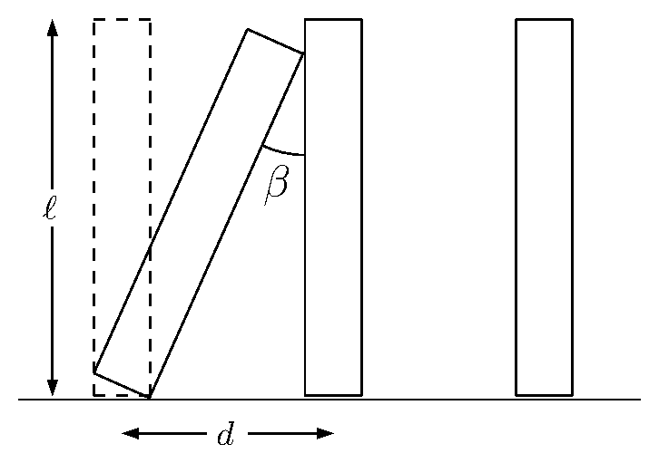

If you have ever set up a long chain of dominoes that topple each other in a wavelike progression, you must have wondered how long it would take for all the dominoes to fall once the experiment is set in motion (as everyone knows, it ends all too quickly given the tedious work involved in setting up the dominoes...). We can now answer this question, in a slightly simplified model, using the theory of the pendulum discussed above. (1)
Let us fix some notation for the setup of our domino wave. We assume a row of standing dominoes of height $\ell$ is arranged on a plane, with a fixed horizontal distance of $d$ between each two successive dominoes. For simplicity, we will model each domino as a simple inverted pendulum with mass $m$ (it is not difficult to adapt the analysis to the case of a compound pendulum) and that its thickness is small compared to the inter-domino spacing $d$. We denote by $\beta$ the angle formed between two adjacent dominoes when one rotates around its contact point with the floor until it just touches the other; it is given by
See Figure 7.

Our analysis of the speed of the domino wave will be based on analyzing what happens during collisions between dominoes. We will make the following idealized assumptions:
Only collisions between successive dominoes occur (i.e., we neglect the possible interaction between two dominoes separated by a third domino).
The bottom end of each domino is fixed in place by static friction with the floor while it topples, so the domino is only free to rotate around it.
Collisions are instantaneous and are elastic, i.e., involve no dissipation of energy: both the energy and momentum of the system are the same immediately before and after a collision (of course, during other times energy and momentum are not conserved due to friction forces and dissipation of kinetic energy when dominoes hit the floor).
We will now derive equations relating the initial angular velocity $\omega_0$ of one domino, "domino $A$", to the initial angular velocity $\omega_1$ of the next one in the row, "domino $B$". Two intermediate quantities that will play a role in the analysis are the angular velocity $\Omega_0$ of domino $A$ just before it collides with domino $B$, and its angular velocity $\Omega_1$ immediately after the collision. The relationships between the four quantities $\omega_0, \omega_1, \Omega_0, \Omega_1$ are determined by the conservation of energy and momentum.
First, conservation of energy during the motion of domino $A$ from the time it starts to rotate until it hits domino $B$ gives the equation
which can be solved for $\Omega_0$ to give
Next, conservation of energy during the collision gives
which simplifies to
To express the conservation of momentum, it is easier (and equivalent) to write an equation for the conservation of angular momentum around the base point of domino $B$. This gives
That is,
It is not difficult to solve (26), (27) for $\Omega_1$ and $\omega_1$, to get
where
Plugging the value of $\Omega_0$ obtained from (25) into (28) finally yields an equation expressing $\omega_1$ in terms of $\omega_0$, namely
Our analysis has produced the following result: if we start the domino wave going by giving the first domino in the chain a slight push that gives it an initial angular velocity $\omega_0$, then the next domino it will collide with will start its motion with an initial angular velocity equal to $\omega_1=H(\omega_0)$. That domino will collide with a third domino, which will acquire an initial angular velocity of $\omega_2=H(\omega_1)=H(H(\omega_0))$, and so forth: the $n$th domino in the chain will get an initial angular velocity of
(the $n$th functional iterate of $H$). While it may appear as if the way the wave gets started is important, a more careful look at the properties of the function $H$ shows that in fact the wave will settle down to an equilibrium state in which each domino gets an initial angular velocity equal to
This equilibrium angular velocity must satisfy the equation
which can be solved to give
We are finally ready to answer the original question regarding the speed of a traveling domino wave. Once the wave has reached its equilibrium state, each domino starts its motion with the angular velocity $\omega_\infty$, and rotates through an angle of $\beta$ before colliding with the next domino. By the theory of falling times for the inverted pendulum discussed in the previous section, the time this rotation takes is given by
where
During each such rotation cycle, one can say that the wave has travelled the distance $d$ equal to the inter-domino spacing. Thus, the speed of the domino wave is given by the grand formula
Note that all quantities in this formula are expressed as functions of the "free" parameters $d, \ell$ and $g$.
(1) This section is adapted from the paper Domino waves by C. J. Efthimiou and M. D. Johnson (SIAM Review $\textbf{49}$ (2007), 111--120).